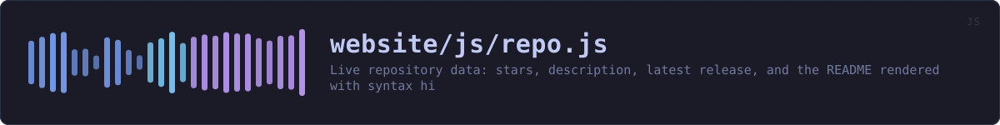

website/js/repo.js
the website's source · 392 lines · read it on GitHub
WHAT IT DOES
Live repository data: stars, description, latest release, and the README rendered with syntax highlighting.
# The one third-party request on this site, and why it is opt-in
Everything else here is served from the same origin. This module talks to api.github.com, which learns your IP address and that you looked at this project. GitHub already knows both -- it is serving the page you are reading -- so the marginal cost is nil for most visitors. But someone reading over Tor or a mirror is in a different position, so the fetch is announced in the page and can be skipped: the panel degrades to static text and a plain link, and nothing else on the site depends on it.
No token, no cookies, no credentials. Unauthenticated GitHub API requests are rate-limited by IP to 60/hour, which a documentation page will never approach.
IN PLAIN WORDS
This is the panel showing the project's stars, its latest release and its README, read from GitHub as you look at it.
It is the only thing on this site that talks to anybody else's server, and the page says so before it does. GitHub learns your address and that you looked at this project -- which it already knows, because it is serving you this page. If you would rather it did not happen at all, the panel turns into a plain link and nothing else on the site notices.
WHAT CALLS WHAT
Read out of the source: an edge means the callee’s name appears, called, inside the caller’s body. A syntactic reading, not a resolved one.
| Function | Line |
|---|---|
text | 38 |
number | 43 |
still | 48 |
arrive | 59 |
countTo | 78 |
frame | 92 |
loadMeta | 104 |
safeAssetUrl | 150 |
loadRelease | 158 |
stripHtmlBlocks | 245 |
loadReadme | 283 |
settleButton | 345 |
start | 351 |